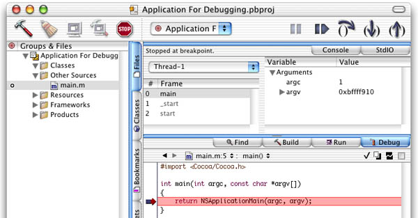
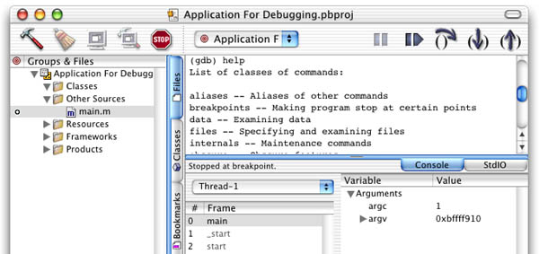
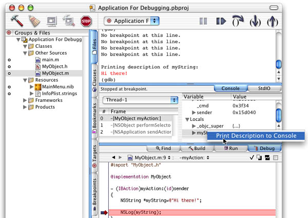

|
|
This Technote explains how to do common debugging tasks in GDB (Mac OS X's debugger) on Mac OS X in C, C++ and Objective-C (Java has its own debugger), as well as various tips and tricks that developers may find helpful.
This is not intended to be in any way comprehensive documentation for GDB (see the References section for the full manual), but instead to answer the common questions that a developer new to GDB might have, in a way that you can easily reference in the future. It also has a specifically Mac OS X focus, as opposed to other documentation designed to cover GDB in a more platform-agnostic manner.
This technote is divided into four sections: GDB in Project Builder, Launching, Quitting, and Connecting to Apps with GDB, Breakpoints, Backtraces, and Disassembling, and Additional Notes and Cool Stuff.
[Dec 07 2001]
|
GDB in Project Builder
Project Builder is Apple's own Integrated Development Environment for use on Mac OS X, supporting development in C, C++, Objective-C, Objective-C++, and Java. Project Builder provides a feature-rich GUI development environment in its own right, but doesn't try to do all the work itself - it leverages open-source tools that are familiar to many in the development community. One of these tools is GDB, and is used by Project Builder to provide debugging information to the IDE. Thus, when you debug your app in Project Builder, you are really interacting with GDB. When you debug your application, your window will look something like this:

Figure 1. Project Builder's debugging interface.
Project Builder itself provides GUI control over your app for such tasks as setting breakpoints (the little arrow in the left margin of the source), stepping through code, and viewing code. Toolbar buttons are provided for stepping, pausing, and continuing, and when breakpoints are hit, stack frames are presented for easy inspection along with variables in scope.
Sometimes, however, you will want to take advantage of debugger functionality that is not yet presented in Project Builder's user interface. At times like these you want to interact with GDB directly: you can do this through the "Console" tab that shows up right below the toolbar. Bringing down this tab lets you talk to the GDB session in progress that Project Builder itself talks to; that means that you don't have to attach GDB to the application yourself, establish breakpoints yourself, etc., and can instead focus on viewing variables in different formats, disassembling, and other features that Project Builder may not yet provide. Much of this technote applies just fine to using GDB in this manner. This hybrid approach - mixing the use of GDB directly with Project Builder - is good for those situations where the IDE's functionality is good enough for most of what you are doing, but there are a few things for which you need direct access to GDB.

Figure 2. Typing "help" in Project Builder's Console produces basic help for GDB.
While waiting for new Project Builder versions to implement more GUI debugging functionality, one thing that you can do from the GUI in Project Builder is take advantage of one of the features introduced in version 1.1 that you may not have noticed: the new "Print Description to Console" feature that shows up in the contextual menu that you get when control-clicking on objects in the debugger pane. This works on CoreFoundation ("CF")-based objects, as well as Objective-C "NS" objects. Selecting that menu item will automatically print the contents of the object to the console pane.

Figure 3. "Print Description to Console" prints the contents of a CF or NS-type object.
If you aren't already familiar with it, feel free to peruse the Project Builder Help documentation (available from the Help menu in Project Builder) for more information on general debugging using Project Builder. We are going to move on now and assume that in the course of your development you have found that Project Builder itself is not able to provide the debugging functionality that you need, and that you are going back to the Console tab too often for it to be less than cumbersome. When such a time arrives, it is time to just fire up Terminal and interact with GDB directly and completely yourself. This technote will follow that approach. Next up: an explanation of the conventions and basics of using GDB.
Back to top
Launching, Quitting, and Connecting to Applications With GDB
Command Conventions
- Throughout this technote you will see GDB commands introduced with the first letter or letters in parenthesis, like this:
(b)reak. GDB can do tab completion and automatic command expansion, and thus you only need sufficient letters of the command name to make it non-ambiguous. The letters in parenthesis are the minimum needed to invoke that command; for example, typing "b" at the command prompt is equivalent to typing "break." Some commands have special hard-coded abbreviations even if the abbreviation would be ambiguous, providing quick access to frequently used commands.
- You will also see GDB commands introduced that optionally take arguments, and the arguments will be placed in brackets like so:
(d)elete [breakpoints]
- GDB commands are "sticky." This means that if you hit Return on a blank line, GDB will (in general) execute the previous command over again, saving you typing. A few commands (explained as needed) even auto-construct new arguments when auto-repeated this way.
- Hitting up-arrow will take you to the previous GDB command, just like the command line.
- You can always get help in GDB by simply typing
help [commandname] or just help. GDB's man page has some of the basics in it as well.
Launching/Quitting GDB and Attaching/Running Applications For Debugging
- GDB can be launched from the command-line by simply typing
gdb
- You can run GDB on a given application by typing
gdb path-to-your-binary, or if the app is already running, typing gdb path-to-your-binary process-id
- A common way to attach GDB to a currently running application in order to debug it is to simply launch GDB, and then type (
at)tach process-id. For instance, you might launch your app in Project Builder, notice that you need to debug it, and then attach to it with GDB via the command-line.
- Whenever you attach to a process that is already running, GDB pauses that process to give you a chance to do any setup that you may want to do. You can continue execution of the process by typing
(c)ontinue
- When attaching to a process that is already running, GDB may not have a chance to automatically determine what programming language to use for evaluating expressions. This happens most often when debugging Cocoa programs written in Objective-C. The common symptom of this problem is strange parse errors when trying to work with expressions like conditional breakpoints after attaching. The solution is to type
set language objective-c after attaching to tell it what language you will be using.
- If you launched GDB by giving it the path to your application binary, you will need to invoke the
(r)un [arguments to pass to your application] command to launch your application.
- Quit GDB when you are done by simply typing
(q)uit
Launching CFM Applications in GDB
- CFM (Code Fragment Manager) applications (the format used by Mac OS 9-compatible Carbon applications) rely on the LaunchCFMApp application to run on Mac OS X. Thus, to debug a CFM application under GDB, you will want to launch GDB with the path to LaunchCFMApp, and then use the run command, passing in the path to your CFM binary as an argument.
- Warnings about not being able to find various symbol files can be safely ignored; GDB is merely noticing that CFM isn't providing it with as much information as a Mach-O binary would.
| Listing 1. Here we load LaunchCFMApp, and use it to run iTunes under GDB. We Control-C to stop execution, and then quit GDB.
[rivendell:~] mformica% gdb /System/Library/Frameworks/Carbon.framework/Versions
/A/Support/LaunchCFMApp
GNU gdb 5.0-20001113 (Apple version gdb-200) (Tue Oct 9 18:01:34
GMT 2001) (UI_OUT)
Copyright 2000 Free Software Foundation, Inc.
GDB is free software, covered by the GNU General Public License, and you are
welcome to change it and/or distribute copies of it under certain conditions.
Type "show copying" to see the conditions.
There is absolutely no warranty for GDB. Type "show warranty" for details.
This GDB was configured as "powerpc-apple-macos10".
Reading symbols for shared libraries .... done
(gdb) run /Applications/iTunes.app/Contents/MacOS/iTunes
Starting program: /System/Library/Frameworks/Carbon.framework/Versions/A/
Support/LaunchCFMApp /Applications/iTunes.app/Contents/MacOS/iTunes
[Switching to thread 1 (process 1115 thread 0x1603)]
Reading symbols for shared libraries
........................................... done
Reading symbols for shared libraries . done
unable to open symbol file: DrawSprocketLib: No such file or directory.
warning: Unable to read symbols from "DrawSprocketLib"; reading from memory.
Reading symbols for shared libraries . done
.
.
.
^C
Program received signal SIGINT, Interrupt.
0x70001308 in mach_msg_overwrite_trap ()
(gdb) q
The program is running. Exit anyway? (y or n) y
|
|
Back to top
Breakpoints, Backtraces, and Disassembling
Setting/Viewing/Removing Regular Breakpoints, Stepping, and Continuing
- You can set a breakpoint in GDB by typing
(b)reak functionname, (b)reak sourcefilename:linenum, (b)reak linenum (where the last file whose source text was printed is assumed), or (b)reak sourcefilename:functionname. Examples:
- C function:
b foo
- C++ method:
b Foo::bar (a choice will be presented if there is more than one match)
- Objective-C method:
b -[Foo bar], or for an action method example, b -[Foo bar:]
- Each breakpoint is numbered; you can get a listing of all current breakpoints by typing
(i)nfo break
- You can delete a breakpoint or breakpoints by typing
(d)elete breakpoint-nums-separated-by-spaces - for example, delete 1 2 3, or you can use a dash to indicate a range of breakpoints like so: delete 1-3
- You can also temporarily disable/enable breakpoints by typing
(dis)able or (en)able breakpoint-nums-separated-by-spaces
- After stopping at a breakpoint, type
(c)ontinue to continue execution of your program
- After stopping at a breakpoint, type
(n)ext to step over the next line of your program
- After stopping at a breakpoint, type
(s)tep to step into the next line of your program
- If the location/symbol of the breakpoint you want to set does not yet exist in the program's address space (it is in a loadable bundle that is yet to be loaded, etc.), you can use the
fb functionname command to set a "future breakpoint"
- Hitting Control-C will pause your program and take you back to a GDB prompt, ready for your input.
Working With Conditional Breakpoints
- You can set a conditional breakpoint in GDB by typing
(b)reak functionname if condition where condition is some expression; conversely, you can add/change a condition on an existing breakpoint by typing condition breaknum expression where breaknum is the breakpoint number you wish to operate on. For example, you might type: b foobar if x>25 or condition 3 x>25
- Conditions can include function calls. For example, you might type:
b foobar if bigEnough(x)
- See the section on GDB expressions further down; expressions (in conditional breakpoints, for example) that contain calls to system functions/methods may need those functions/methods to have their return type explicitly cast for GDB to be able to execute them. For example, you might need to do something like this:
b 9 if (bool)[(NSString *)[myString description] isEqual:@"Hi there!"]
- Conditions are removed from breakpoints by typing
condition breaknum
- A note on watchpoints: Watchpoints are currently not very functional on Mac OS X due to a lack of hardware watchpoints and a conflict with certain PPC instructions. Thus, watchpoints should be avoided, and will not be explained in this technote. You can get similar functionality through the use of conditional breakpoints instead.
Backtraces, Selecting Stack Frames, and Disassembling
- When you are stopped at a breakpoint, often you will want to see the steps your program has taken to get where it is. GDB gives you such a listing, printing out stack frames starting with the currently executing frame (frame zero) and then working its way back up the stack (to frame one, frame two, etc), by giving you a backtrace when you type
backtrace [number-of-frames] or just bt [number-of-frames]. This is one of the most common commands you will use in GDB. The optional number of frames argument tells the backtrace command how many levels up the stack (in the call chain) to list; often, you will want to use this argument to help prevent the backtrace information from scrolling off the terminal window due to irrelevant stack frames way up near the beginning of your program.
- While stack frame zero is the currently selected frame by default, a specific frame number can be selected by the programmer to bring relevant instance variables into scope by typing:
frame n
- You can get information on local variables and arguments to the currently executing routine in your program by typing
info locals or info args.
- You can find the memory address range of a line or routine of source code by typing
info line [linenum or routinename] where the current line is assumed if you don't pass in a linenum or routine name.
- You can disassemble the routine you are currently stopped in by simply typing
(disas)semble.
- On the other hand, you can disassemble some other chunk of memory by typing
(disas)semble startaddr, endaddr after getting the memory address range you are interested in from info line. Note that the ending address is optional, and that it will disassemble not just the lines that you give it, but the surrounding lines (usually the whole surrounding routine) as well.
| Listing 2. Here we list some code (explained in the next section), get the memory address of line 21, and then disassemble that line and the surrounding Objective-C action method.
(gdb) list 20,25
20
21 for (i=0;i<10;i++)
22 NSLog([someObject whichOne:i]);
23 }
24
25 @end
(gdb) info line 21
Line 21 of "MyObject.m" starts at address 0x3dcc <-[MyObject
myAction:]+72> and ends at 0x3de4 <-[MyObject myAction:]+96>.
(gdb) disassemble 0x3dcc
Dump of assembler code for function -[MyObject myAction:]:
0x3d84 <-[MyObject myAction:]>: mflr r0
0x3d88 <-[MyObject myAction:]+4>: stmw r30,-8(r1)
0x3d8c <-[MyObject myAction:]+8>: stw r0,8(r1)
.
.
.
0x3dcc <-[MyObject myAction:]+72>: li r0,0
.
.
.
|
|
Back to top
Source Files, Routines, Expressions, and Variables
Listing and Working with Source Files
Ok, so now you know how to manage breakpoints in your application, but say you forget the name of that important function you wanted to break on? Or, what if you want to list the source code to your program right around the breakpoint? Here's how:
- You can display the source code of a given file with
(l)ist filename:startline,endline. Other examples:
- List specific lines from a specific file:
list SomeFile.c:1,5
- List specific lines assuming the current file:
list 20,30
- List a specific Objective-C method (and surrounding lines):
list -[MyObject myAction:]
- List a specific function from a specific file:
list MyFile.cpp:FooFunction
- List more lines, continuing from the current spot (breakpoint, etc.):
list +
- List previous lines to the current spot (breakpoint, etc.):
list -
Routines/Expressions in GDB
- An arbitrary function/method can be called in GDB by typing
call functionname
- If you have an expression (in a conditional breakpoint, etc.) that includes a function/method call from one of Apple's system frameworks, chances are that the call won't contain return type information. This is typical for example when making CoreFoundation calls (like CFShow) or Objective-C calls into the AppKit and Foundation frameworks. If the return type is not available to GDB, GDB will not be able to execute the function/method, unless you explicitly cast the function/method call to the proper return type. For example:
- Including NSString calls in a conditional breakpoint:
b 9 if (bool)[(NSString *)[myString description] isEqual:@"Hi there!"]
- Calling CFShow:
call (void)CFShow(someCFObj)
Viewing/Setting the Value of Objects, Variables, and Routines
- The basic format for viewing the contents of a variable or expression in a given format is
(p)rint [/format] [expression], with the default format if you omit the format specifier being GDB's best guess based on the variable's data type. For example, you can type print /d someVar to display it as a signed decimal. Different format specifiers can be given to view the results in different ways. Here are the most commonly used format specifiers:
| /x |
interprets and prints the variable/expression as hex |
| /d |
interprets and prints as signed decimal |
| /u |
interprets and prints as unsigned decimal |
| /c |
interprets and prints as a character constant |
| /f |
interprets and prints as floating point |
| /a |
interprets and prints as address in hex and offset from nearest preceding symbol |
- Feel free to use the format specifier in combination with explicit casting to particular data types. Also, GDB does a pretty good job of figuring out complex data types on its own; for example:
(gdb) list 18,18
18 char * someString="Hello, World!";
(gdb) p someString
$2 = 0x3e70 "Hello, World!\000"...
(gdb) p (char[5])*someString
$3 = "Hello"...
|
- Something to be aware of is that you don't really need the space between the word print and the /format because GDB commands can't contain a slash. For example, you can do this:
p/x someVar
- When you print a variable or expression in GDB, it will print the results in the form "$somenum = yourvalue." The $somenum represents the value history, and it increments over the life of your debug session - you can later work with that value again by referring to the appropriate $num.
- You can reprint the last value in the value history in a different format by simply specifying
(p)rint /format and leaving off the expression.
- Typing
whatis [variable] tells you what type your variable is. For example:
(gdb) list 18,18
18 char * someString="Hello, World!";
(gdb) whatis someString
type = char *
|
- Cocoa and CoreFoundation opaque objects don't print very well using the print command, because they are objects, not just pointers to data. For these objects, use the
po command (short for print object) to print the object's description, or for CoreFoundation objects, you can also call CFShow(). For example:
(gdb) list 18,19
18 CFStringRef testString=CFSTR("just a test");
19 NSString *aString=@"Hi there!";
(gdb) po aString
Hi there!
(gdb) call (void)CFShow(testString)
just a test
|
- Note that if you are debugging an already running program that you have attached to in GDB (as opposed to launching the app from within GDB), stdout and stderr will not be hooked up to the Terminal (they will point most likely to the Console or to Project Builder's Run tab, depending upon how you have launched your app). Thus calling CFShow won't print the results in the Terminal, which can be annoying. You can rehook stdout and stderr to point to your Terminal window in GDB like so:
| Listing 3. Here we close the existing connections to stdout and stderr, determine the device used by the current shell session, and reopen the connections, passing in the correct device to redirect the output.
(gdb) call (void) close(1)
(gdb) call (void) close(2)
(gdb) shell tty
/dev/ttyp1
(gdb) call (int) open("/dev/ttyp1", 2, 0)
$1 = 1
(gdb) call (int) open("/dev/ttyp1", 2, 0)
$2 = 2
|
|
- The value of a variable can be set by typing
set var someVar=someValue; for example, set var x=5
Additional Notes & Cool Stuff
The following are some important items that you may want to investigate further when working with GDB, as well as some tips/tricks that might come in handy:
- MacsBug plugin for GDB: A GDB plugin exists to make GDB look more like MacsBug. You can find it and more information about it in /usr/libexec/gdb/plugins/MacsBug on a system with the Mac OS X Developer Tools installed. Also see Technote 2030 for more information on using GDB from a "MacsBug veteran" approach.
- Breakpoint tip: A useful thing to do when debugging Cocoa applications is to set a breakpoint on -[NSException raise] to let you study your program at the exact point that something goes wrong.
- Breakpoint tip: When using MallocDebug in conjunction with GDB to track down double-free bugs, it is quite useful to set a breakpoint on malloc_printf, because when you double-free, it will try to alert you via stderr and your breakpoint will be hit, allowing you to get a backtrace at the exact point where you double-freed.
- Convenience Variables: GDB sets and permits you to set convenience variables for your use; they all start with "$" and you have probably noticed them already when executing commands and printing variables (whenever you print a variable GDB sets a convenience variable to that value, i.e. "$3='Hello'..."). After establishing a convenience variable, you can refer to it for the rest of your program, to compare old values with new values of the same variable or to use as part of the input to some other command. It is often convenient to do this when diving down into complex data structures for example, instead of having to type the whole long thing every time. For example, instead of this:
print ((TkWindow *) ((Interp *) interp)->mainWin)->display, you could type this:
(gdb) print (Interp *) interp
$1 = ...
(gdb) print ((TkWindow *) $1)->mainWin
$2 = ...
(gdb) print $2->display
|
- Program execution location: You can tell GDB to continue execution at a given line using the
jump linenum command. Be careful with this command, as changing your program's execution point to an incorrect point can cause strange execution behavior.
- Examining memory: GDB has an
x command (short for examine), similar to (p)rint, which is useful for examining chunks of memory and slicing them in different ways. It has two extra format specifiers: 's' (null-terminated string) and 'i' (machine instruction).
- Auto-display of expressions: GDB can be configured using the
display [/format] expression command to automatically display a given expression whenever it stops for a breakpoint. You use info display to get the list of expressions to display, and undisplay displaynums is used to remove a given auto-display item.
- Thread support: For a multi-threaded application, you can use
thread threadnum to switch context to a given thread, info threads to see what threads exist, and thread apply [threadnums] [all] commands to apply given commands to a range of threads. For example, thread apply all bt dumps backtraces of all threads in your application.
- GDB has much more functionality than could be covered in this technote; although most of your source-level debugging needs will be met by the commands presented here, don't be afraid to go study the manual as needed; chances are, there is a command or option that will do what you want.
Back to top
References
Richard Stallman et al, Debugging with GDB, Free Software Foundation, March 2000
Technical Note TN2030, "GDB for MacsBug Veterans"
Back to top
Downloadables

|
Acrobat version of this Note (340K) |
Download |
Back to top |